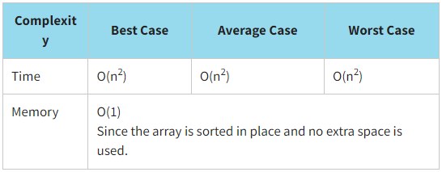
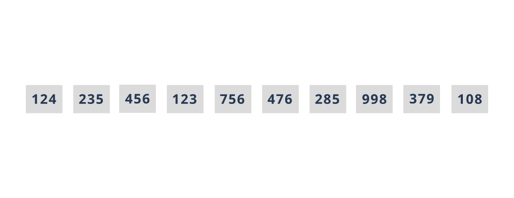
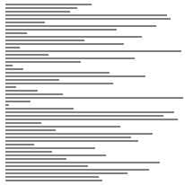
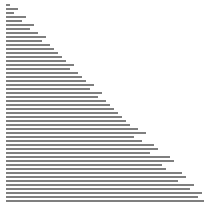

Selection Sorting
Selection sort is a kind of hybrid between the bubble sort and the insertion sort. Like the bubble sort, this algorithm iterates over an array over and over, moving one value to the correct position. The correct position for the selected element is determined before moving to the next element in the array, and with each pass, the unsorted part of the array is decreased by one element. However, unlike the bubble sort, it selects the smallest unsorted value instead of the largest one. As with the insertion sort, the sorted portion of the array is at the beginning, while in the bubble sort it is at the end.
Selection sort is NOT a stable sorting algorithm because equal elements are re-arranged in the final sort order with relation to one another.
Let us sort our array of library cards using the selection sort. Recall that the values of library cards are {124,235,456,123,756,476,285,998,379,108}.
Look at the program implementation of the selection sort.
JavaScript realisation
function selectionSort(arr) {
for (let i = 0; i < arr.length; i++) {
let min = i;
for (let j = i + 1; j < arr.length; j++) {
if (arr[min] > arr[j]) {
min = j;
}
}
const temp = arr[min];
arr[min] = arr[i];
arr[i] = temp;
}
}
const initData = [124, 235, 456, 123, 756, 476, 285, 998, 379, 108];
console.log(`Initial array:`, initData);
selectionSort(initData);
console.log(`Sorted array:`, initData);
The result:
Initial array: [ 124, 235, 456, 123, 756, 476, 285, 998, 379, 108 ]
Sorted array: [ 108, 123, 124, 235, 285, 379, 456, 476, 756, 998 ]
You should choose the selection sort when:
- an array is not partially sorted, so even if an array is partially sorted, still each element is compared and there is no breaking out early
- an array to be sorted is relatively small
- a simple sorting implementation is desired
- there are limits on memory usage
Video
Click here or here to see a more detailed explanation of the selection sort.One more example
Самый простой и примитивный алгоритм сортировки — Selection Sort. Суть алгоритма достаточно проста, мы берем первый элемент массива, и бегаем по всему оставшемуся массиву в поисках числа меньше нашего первого элемента. Когда мы пробегаем весь массив, если меньшее число найдено — меняем его местами с первым элементом. После этого мы вибраем второй элемент, и все повторяется, пока для каждого элемента мы не пройдем оставшуюся часть массива.
Код алгоритма элементарен:
var selection_sort = function(array){
var length = array.length;
for (var i = 0; i < length; i++){
var min = i;
for (var j = i + 1 ; j < length; j++){
if (array[min] > array[j]){
min = j;
}
}
array.swap(i,min);
}
return array;
}
Визуализация тоже не показывает никаких фантастических картин:
Алгоритм не отличается скоростью, даже если массив будет частично отсортирован:
Ну и скорость не особо падает, в самом худшем случае
- Сложность по памяти: O(n) = 1
- По времени : обход O(n) = n ^ 2 , + также n для обмена местами элементов.